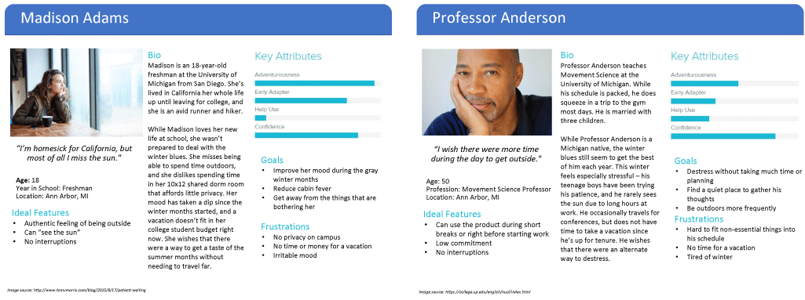
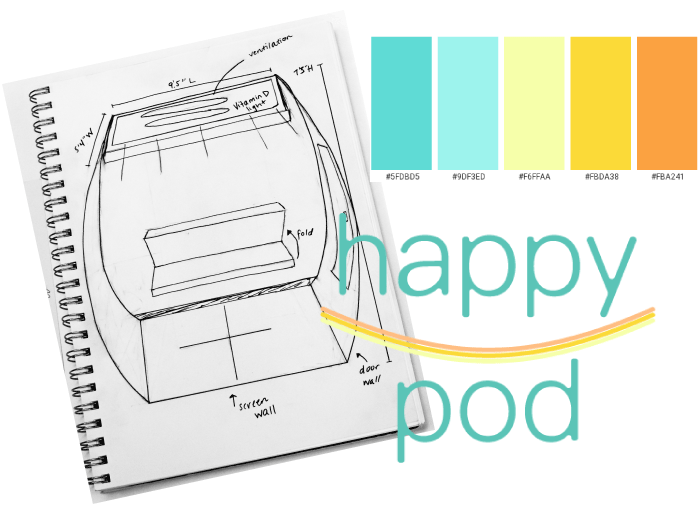
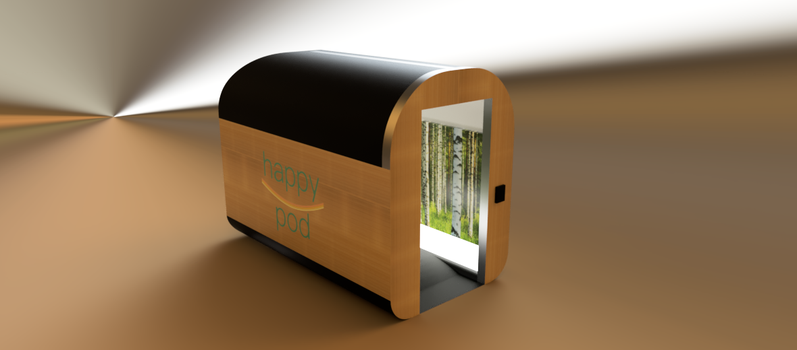
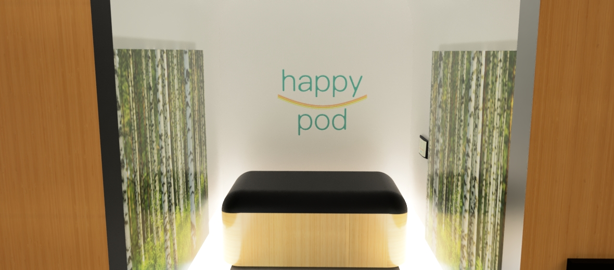

Background
Makeathon's 2019 Product Design Competition gave teams the freedom to design and build a product without any restrictions. This year the panel of judges were from tech companies including Autodesk, Amazon, National Instruments, and May Mobility.
During the Makeathon, participants worked within groups of 5-6, where teams were funneled from different disciplines to collaborate on ideating and conceptualizing a product. My group consisted of a movement scientist, 3 graduate researchers in the information field, and a fellow UX designer who worked on the interface inside the pod. Over 50 teams came out to compete!
Problem
Our design brief was an open book, "design and build a product without any restrictions but use AutoDesk 360 fusion software somewhere in your process". This problem was open-ended, yet just specific enough for us to come up with a few different applications. From fixing excercise posture to using architecture to negate seasonal affective disorder, our strengths were evidently more concentrated in the area of wellness. We chose to use our group’s experience to solve the problem of seasonal sadness and stress within student populations.
Ideation
We used a design process that featured a detailed, yet extensive methods to create and filter through ideas without judgement or holds barred. As such, we started by throwing out as many ideas as possible, no matter how far out.
Among our weirdest ideas were a shoulder tickling device to prevent slouching, a natural spectrum light that would activate when recieving a text, and an IOT yoga mat.
But scoping out the ideas that would truly accomplish the goal of creating a beneficial wellness experience was exhausting. How does one create peace in a physical space? What about the feeling that a user experiences when de-stressing? It's very personal, almost a spiritual feeling that we strived to recreate. Even our personas of Happy Pod users struggled to highlight the immaterial feelings we needed to replicate with a digital and physical medium. 
Solution
Our researchers conducted competitive analysis on other products in the market as well as potential user interviews. We wanted to know what people like, how they de-stress and what they currently use to escape the hustle and bustle of everyday life. Together we painted a user’s journey through personas, features would benefit users, what our product would look like brand-wise and what a personal pod experience might be. 
We approached the problem by focusing on what we could control – sensory details. We thought about the visual aspect in particular. What if one could personalize their own stress-free paradise? We thought an all encompassing experience with wall to wall screens and Seasonal Affective Disorder defensive light would transport our users to the stress free location of their dreams - perhaps a waterfall or birchwood forest. We focused mostly on the look,feel, and features of the Pod based off of user research.
My Role
I was originally in charge of branding - colors, sketch of product and logo, but I decided that we needed to step up our product prototyping game more than just a sketch so I took on the task of creating a 3D product model. Prior to Makeathon, I never had any CAD experience but I taught myself how to design, prototype, and render a 3D model in under 36 hours (with thanks to LOTS of coffee). Our team won first place but on top of that, my 3D prototype with AutoDesk's Fusion 360 software won us an additional prize for best runner up use of CAD software across all teams in the competition!

Further Explorations
While we didn’t get as much time as would have liked to do further research and iterations on the project, we did think about how we could better support the idea of destressing in a physical environment - a Happy Pod App. For example, we would have liked to implement a feature that would allow users to upload images and places that were meaningful to them and project those in the pod.
The time we spent was amazing and I personally learned a lot about interdisciplinary design processes and the many walks of life that bring people into the design and research field. Thank you to Autodesk, the Makeathon team, and all the other great participants for making this event as memorable and exciting as it was!